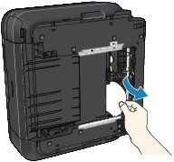

Before removing the jammed paper, see Paper Is Jammed inside the Machine at the Transport Unit to remove it from Transport Unit. If the paper jam error continues, remove the jammed paper following the procedure below.
-
Turn off the machine, and unplug the power cord of the machine from the power supply.
 Important
Important-
If you disconnect the power plug, all the faxes stored in the machine's memory are deleted.
-
-
Remove the Cassette.
If the paper is loaded on the Rear Tray, remove the paper from the Rear Tray and retract the Paper Support.
-
Set the machine upright with the left side down.
Important-
When standing the machine, make sure that the Scanning Unit (Cover) is closed securely.
-
-
Slowly pull the jammed paper out so that the paper does not tear.
 Note
Note-
Set the machine back to its original position immediately after removing the jammed paper.
-
-
Align the paper, then reload it in the Cassette.
Reload paper in the Rear Tray, if necessary.
Note-
When reloading the paper into the machine, confirm that you are using the correct paper and are loading it into the machine correctly.
-
-
Insert the Cassette into the machine again.
-
Plug the machine back in and turn the machine back on.
All print jobs in queue are canceled. Reprint if necessary.
If you cannot remove the paper or the paper tears inside the machine, or if the paper jam error continues after removing the paper, contact the service center.